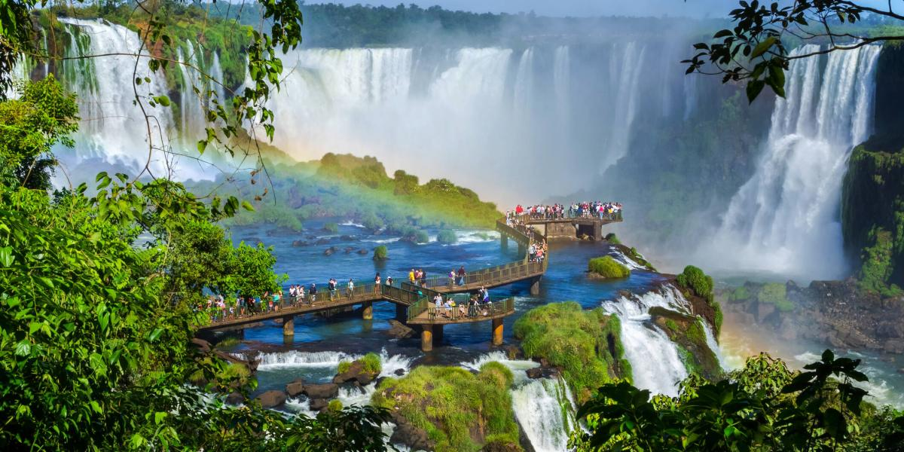

Cataratas del Iguazú
Maravilla Natural del Mundo con 275 saltos de agua que alcanzan los 80 metros de altura. El circuito de pasarelas permite admirar la Garganta del Diablo, el salto más imponente. Parque Nacional protegido que alberga una biodiversidad única.